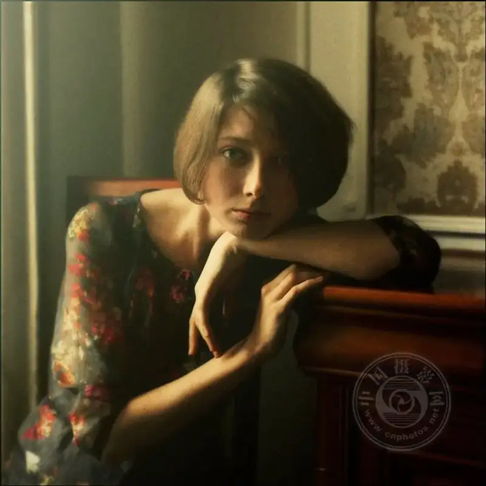
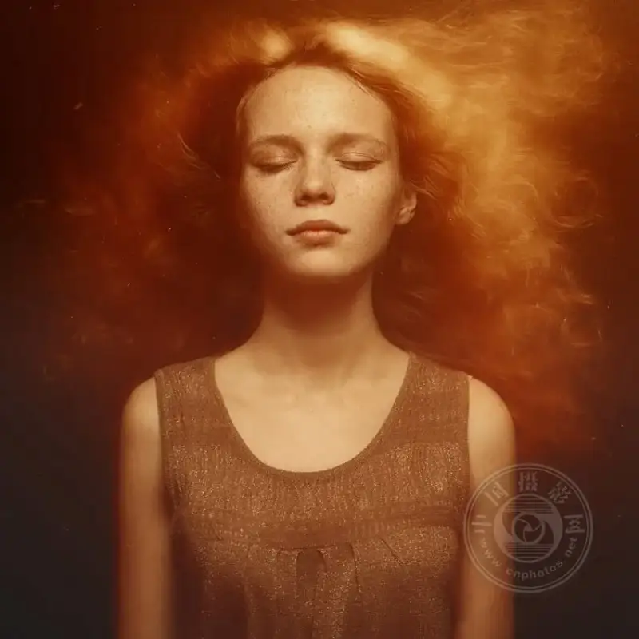
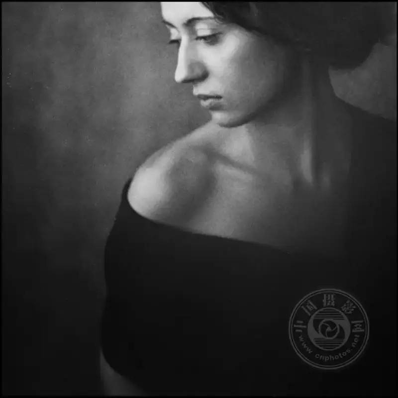
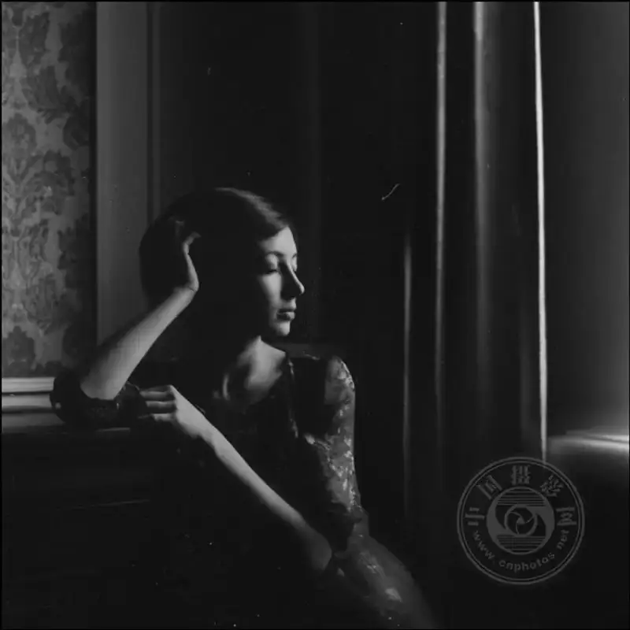
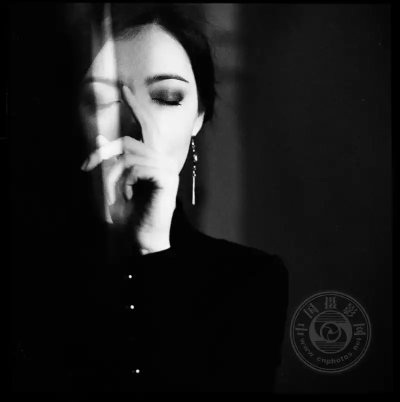
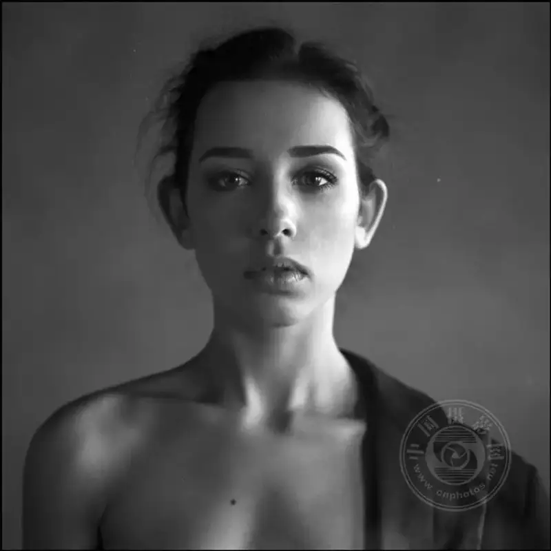
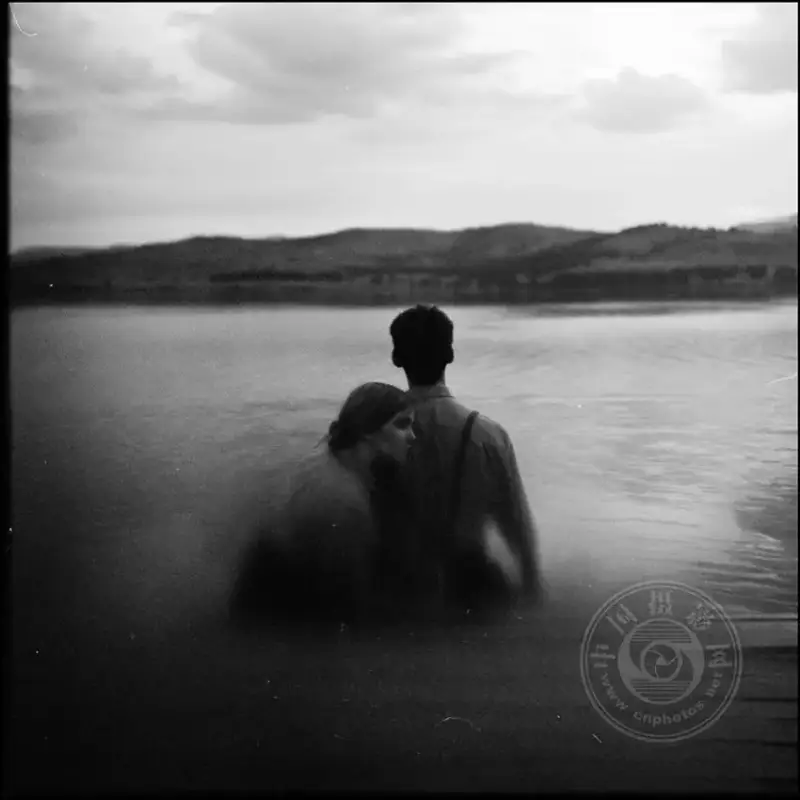
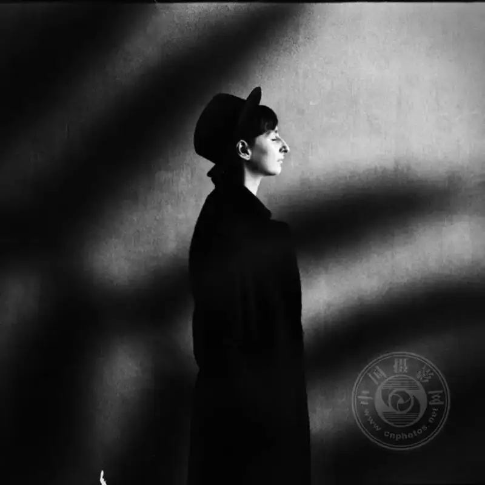
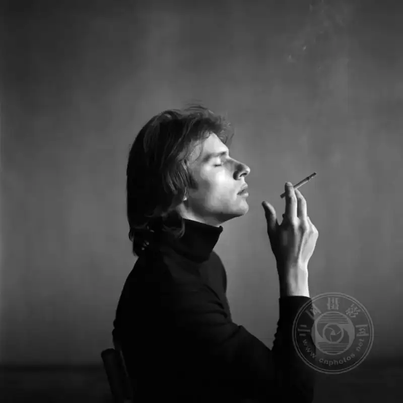
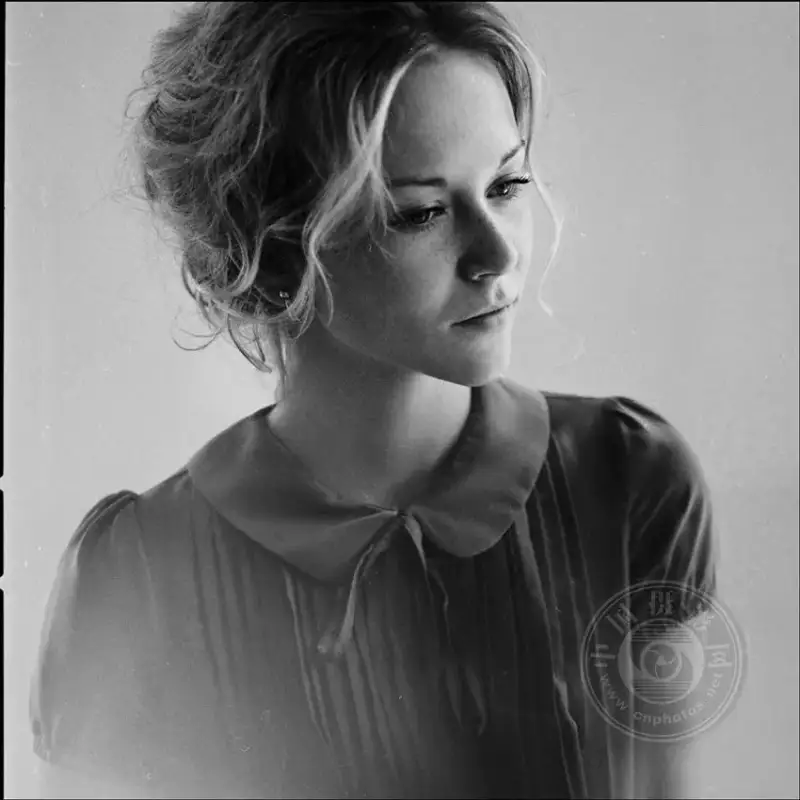

Shooting a portrait is far more than pressing the shutter. It captures a person's essence, his life story, his livelihood, and a deep emotion.
Every day we meet countless faces. But a few faces carry a unique meaning and are stamped into memory, never to be erased. What makes a person's face echo in our subconscious, so hard to forget and so strong?
The answer lies deep in the soul. It is an emotion, positive or negative, and it must reach our soul for that face to stay in our mind.
Today I want to share a few points on how to capture the soul in portrait photography.

▲ ©Aleksandra Kirievskaya

▲ ©Aleksandra Kirievskaya
01 Build a connection
Before you raise the camera, set the lens down and really watch the person in front of you.
Connection is a vital word in portrait photography. If you cannot win the model's trust or let them fully relax, it is hard to capture their true self. The photo may be only a flat and ordinary image.
Polite and clear communication matters more than simply staying positive. What you must do is make them believe in their own beauty. Genuinely praise their charm, and notice the details that make them stand out. You will find that no one refuses such appreciation. When you do this, the model's inner world opens to you, and the shoot goes smoothly.

▲ ©Aleksandra Kirievskaya

▲ ©Aleksandra Kirievskaya
02 Emotion is the soul
Emotion is everything in portrait photography. It makes the viewer stop, think, or be moved by the person in the frame.
To put emotion into a photo needs patience, practice, and a little luck. You can imagine you are a film director. Think in advance about the emotion the person should show, and about what makes a magical photo. This often brings unexpected results.
Of course, while you chase these magical moments, always treat the model with respect. The content and location of a shoot have limits. What you must do is discover and guide, and use the connection you built earlier to draw out the model's truest inner emotion.

▲ ©Aleksandra Kirievskaya

▲ ©Aleksandra Kirievskaya
03 Light and setting
Light and setting are a strong language for telling a person's character.
Where should they be in your dream? Is the light on them strong or dim? These aesthetic choices greatly affect the power of the photo, and they make the viewer curious about the story behind the frame.
The setting can be an open meadow, boundless like a dream. It can also be a darkroom so cramped you can barely turn around. Do not underestimate these two extremes. Both can produce work with a soul. A good setting with just the right light makes people believe, marvel, and even be moved by the person in the frame.

▲ ©Aleksandra Kirievskaya

▲ ©Aleksandra Kirievskaya
04 Create stillness
Some photos are like endless stories. The longer you gaze at them, the more they say.
We love stillness, a wonderful state of immersion. The photo itself says only a quarter. The rest is all the imagination we unfold in pure stillness. This stillness has great power. It can turn a promising photo into a soulful work of art.
So how do you shoot stillness? Feel the person's inner character, and appreciate and interpret the model's unique presence. Follow the flow of the air, and stillness slowly opens to you. Beyond all the noise, only you, your model, and a calm heart remain.

▲ ©Aleksandra Kirievskaya

▲ ©Aleksandra Kirievskaya
Create boldly, and shoot the soulful portraits worth keeping forever. When you truly see the other person, the lens will speak for you.